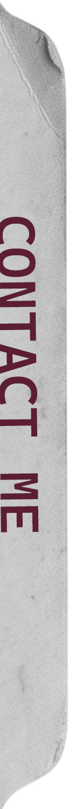
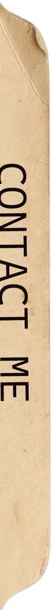

Motion for Explainers
12 explainers on psychology and science, in Ukrainian, written, animated, edited and published solo. Roughly 20 motion graphics an episode.
12 explainers on psychology and science, in Ukrainian, written, animated, edited and published solo. Roughly 20 motion graphics an episode.
Key art for a documentary about a woman left with no legal standing in her partner's life. Two versions were delivered, one for festival print and one for social media.
One gothic character, carried from a life-drawing sketch to a live-action composite and a playable game. Each stage was a different module and a different tool.
A cute spider introduces itself as your PTSD. A one-minute social media explainer about the less obvious symptoms of trauma, and about the people for whom the danger hasn't ended.
A fantasy building carved into a mountainside, reached by a single bridge over a drop. Built from concept research through modular assets to an animated final render.
A seamless loop built only from circles, lines and dots. Chaotic energy builds up, bursts into a solar system, then collapses back to where it started.

